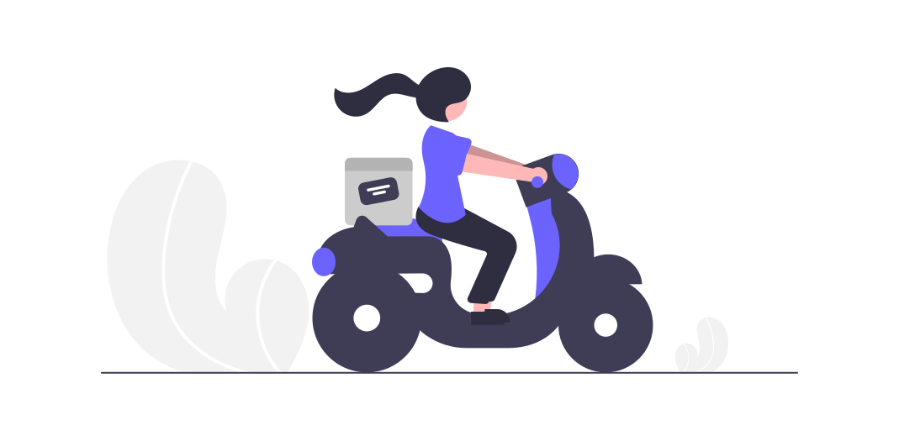

Cars

60 million cars are produced every year. 1 billion cars are currently in use around the world.
Bikes

The record for the longest-ever backwards motorcycle ride was set by Dipayan Choudhury lasting 202 kilometers.
Aeroplane

Some planes can fly for more than five hours after one of their engines goes out. Pilots frequently fall asleep on the job.